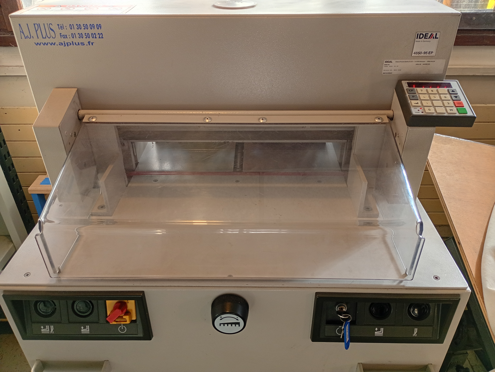

Clé de contact
(Démarrage)1
Interrupteur ON
(Rouge)2
Bouton de
sécurité3
Bouton pour lever
la pression4
Bouton de
pression5
Bouton de
coupe6
Molette
d'ajustement fin7
Pavé numérique de
contrôle8
1 Clé de contact
2 Interrupteur ON (Rouge)
3 Bouton de sécurité
4 Bouton pour lever la pression
5 Bouton de pression
6 Bouton de coupe
7 Molette d'ajustement fin
8 Pavé numérique